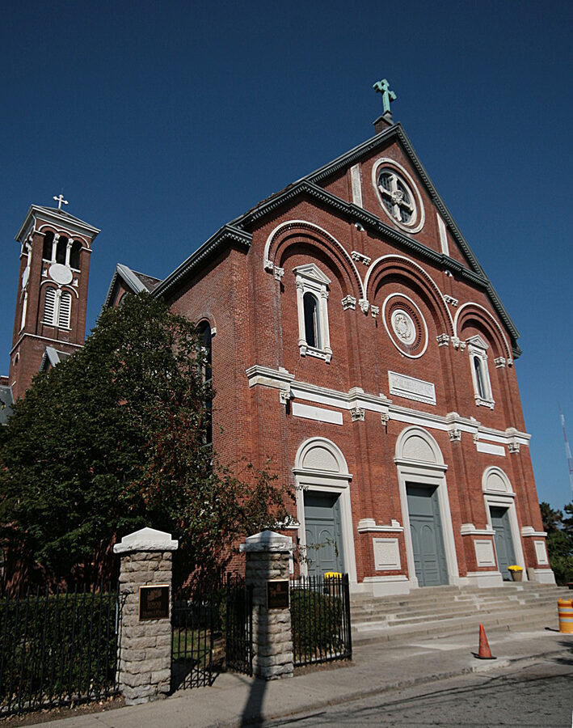

Also known as: William P. Palmer; "Baldy" (his obituary)
Profile status: DOCUMENTED
Quick Facts
Born
1 June 1914, Cincinnati, Hamilton County, Ohio DOCUMENTED (Ohio Births state file 1914042635, which gives the full name William Peter Palmer; SSDI; grave marker). An old family book gave 1 January 1914 (refuted); a 1940 census index gives 1915 UNPROVED
Married
(1) Mary Jane Williams, 6 August 1938, Holy Cross Church, Mt. Adams, Cincinnati DOCUMENTED (marriage banns Vol. 18, p. 60; the church identified as the Mt. Adams parish SUPPORTED) (2) Dorothy (Kestler) Palmer, after 1990 SUPPORTED (named as his wife in his 2005 obituary; no marriage record found)
Died
27 August 2005, Cincinnati, Ohio, age 91 DOCUMENTED (SSDI; Cincinnati Burials; obituary published 30 Aug 2005)
Buried
Oak Hill Cemetery, 11200 Princeton Pike (Springdale/Glendale area), Garden OL, Section 15, Lot 95, Grave 3; buried 2 September 2005 under a military marker DOCUMENTED
Residences
Hamilton County, Ohio (1920); Cincinnati (1930); River View Place, Cincinnati (1935, 1940); Valleydale, Cincinnati at his death (ZIP 45216) DOCUMENTED
Occupation
Not found yet
Religion
Catholic DOCUMENTED: married at Holy Cross (Catholic) church; Mass of Christian Burial at St. James of the Valley Church, Wyoming, Ohio
Military
World War II, U.S. Navy, Seaman 1st Class (S1) DOCUMENTED (Veterans Burials record; military grave marker). Unit, ship and service dates not found yet
Immediate Family
Parents
Peter (Petrus) Palmer (1893–1963), born in Kisjecsa, Hungary (today Iecea Mică, Romania) DOCUMENTED Margaret Lorch (1893–1982), born in Hungary DOCUMENTED
Spouse
Mary Jane Williams (1918–1990), married 6 Aug 1938 DOCUMENTED Dorothy (Kestler) Palmer, his wife at his death in 2005 SUPPORTED
Children
Judith Mae Palmer (1939–2006), b. 9 Feb 1939, Cincinnati SUPPORTED; married Homer William Brewster Jr. FAMILY ACCOUNT A daughter, b. 1940 (name kept private) FAMILY ACCOUNT A daughter, b. 1945 (name kept private) FAMILY ACCOUNT
Siblings
Anna Violet (Palmer) Henderson, b. 19 July 1917, Cincinnati; married William Henderson DOCUMENTED
Anna is in the 1920 and 1930 censuses with William and is named in her father's 1921 naturalization papers and in both parents' obituaries. Her death has not been found.
1914 · age 0 Born (1 Jun), Cincinnati, Ohio DOCUMENTED
1920 · age 5 In his parents' household with sister Anna and grandmother Thresa Lorch; both parents born in Hungary, Hamilton County, Ohio DOCUMENTED
1930 · age 16 Still at home with his parents and Anna, Cincinnati, Ohio DOCUMENTED
1935 · age 21 Living on River View Place, Cincinnati, Ohio DOCUMENTED
1938 · age 24 Married Mary Jane Williams (6 Aug) at Holy Cross Church, Mt. Adams, Cincinnati DOCUMENTED
1939 · age 24 Daughter Judith Mae born (9 Feb), Cincinnati, Ohio SUPPORTED
1940 · age 25 Census: William, Mary J. and Judith on River View Place; a second daughter born in May, Cincinnati, Ohio DOCUMENTED
1940s · age about 27–31 Served in the U.S. Navy in World War II, Seaman 1st Class (dates unknown), DOCUMENTED
1945 · age 30 Third daughter born, Cincinnati area FAMILY ACCOUNT
1963 · age 49 Father Peter died (14 Dec), 2035 Highland Ave., Cincinnati DOCUMENTED
1976 · age 61 Filed a Social Security claim (Mar), Cincinnati North office DOCUMENTED
1982 · age 68 Mother Margaret died (25 Oct), Cincinnati, Ohio DOCUMENTED
1990 · age about 76 Wife Mary Jane died, Ohio (place not found) FAMILY ACCOUNT
2005 · age 91 Died (27 Aug); buried at Oak Hill Cemetery (2 Sep), Cincinnati, Ohio DOCUMENTED
Life Story
William Peter Palmer was born on 1 June 1914 in Cincinnati, the first child of Peter (Petrus) Palmer and Margaret Lorch. Both his parents were immigrants from Hungary, his father from the Banat German village of Kisjecsa; they had married at St. Henry's Catholic Church in Cincinnati the year before. In 1920 the family of five included his little sister Anna and his widowed grandmother, Thresa Lorch. In 1930, at sixteen, he was still at home with his parents and Anna.
On 6 August 1938 William married Mary Jane Williams at Holy Cross Church on Mt. Adams, the brick church built in 1895 beside the Passionist monastery overlooking the city. Their first daughter, Judith Mae, was born on 9 February 1939. The 1940 census finds the three of them on River View Place in Cincinnati, where William had been living since 1935. A second daughter followed in May 1940.
During World War II William served in the U.S. Navy. His grave marker gives his rank as Seaman 1st Class; where and on what ship he served is not yet known. A third daughter was born in 1945.
William's father died at home on Highland Avenue in December 1963, and his mother in 1982. Mary Jane died in 1990, after more than fifty years of marriage. William later married again: his obituary names his wife as Dorothy Palmer, born Kestler.
William lived to ninety-one. Known as "Baldy," he was living in Valleydale when he died in Cincinnati on 27 August 2005. After a Mass of Christian Burial at St. James of the Valley Church in Wyoming, he was buried on 2 September at Oak Hill Cemetery on Princeton Pike under a Navy veteran's marker. His obituary named his three daughters.
More of William's story will be added as family members share their memories.
Photo Gallery
William's military grave marker at Oak Hill Cemetery: William P. Palmer, S1 US Navy, World War II, Jun 1 1914 – Aug 27 2005 (BillionGraves photo)

Holy Cross Monastery and Church, Mt. Adams, Cincinnati, where William and Mary Jane married in 1938 (photo Greg Hume, CC BY 3.0, Wikimedia Commons)
Sources and Evidence
Ohio Births, state file 1914042635: William Peter Palmer, b. 1 Jun 1914, Cincinnati, Hamilton County; mother's maiden name indexed as "Larch" (Lorch) DOCUMENTED
1920 U.S. census, Hamilton County, Ohio: Peter Palmer 26, Margaret 26, William 5, Anna V. 2, mother-in-law Thresa Lorch 58; parents born in Hungary DOCUMENTED
1930 U.S. census, Cincinnati: Peter Palmer 36, Margaret 36, William P. 16, Anna V. 13 DOCUMENTED
Peter Palmer's naturalization petitions, Hamilton County, 1921, naming his children William and Anna Violet DOCUMENTED
Hamilton County marriage banns, Vol. 18, p. 60: William P. Palmer and Mary Jane Williams, Holy Cross church, Cincinnati, 6 Aug 1938 DOCUMENTED
1940 U.S. census, River View Place, Cincinnati (ED 91-78, family 207, roll T627-03189, p. 11B): William P. Palmer 25, wife Mary J. 22, daughter Judith 1; same place in 1935 DOCUMENTED
U.S. Veterans Burials: William P. Palmer, S1, US Navy, World War II, d. 27 Aug 2005, Oak Hill Cemetery, 11200 Princeton Pike DOCUMENTED
Cincinnati Burials: b. 1 Jun 1914, d. 27 Aug 2005, age 91, buried 2 Sep 2005, Oak Hill Cemetery, Garden OL, Section 15, Lot 95, Grave 3 DOCUMENTED
Grave marker photo, BillionGraves (filed in the couple's Documents folder): William P. Palmer, S1 US Navy, World War II, Jun 1 1914 – Aug 27 2005 DOCUMENTED
Social Security Death Index: b. 1 Jun 1914, d. 27 Aug 2005, last residence Cincinnati 45216; Social Security Applications and Claims, claim of March 1976, Cincinnati North office DOCUMENTED
Obituary of William P. Palmer, published 30 Aug 2005: nickname "Baldy"; wife Dorothy Palmer (née Kestler); three daughters; late of Valleydale; visitation at Hodapp Funeral Home, Carthage; Mass at St. James of the Valley Church, Wyoming DOCUMENTED
Obituaries of his father (1963) and mother Margaret (née Lorch) Palmer (1982), Cincinnati & Hamilton County Public Library: both name son William Palmer and granddaughter Judith DOCUMENTED
MyHeritage family tree (AJ GANK Web Site): wife Dorothy Marie Palmer (born Kestler), 1918–2018. A tree, not a record UNPROVED
Grades: DOCUMENTED an original record says it · SUPPORTED several records point to it · FAMILY ACCOUNT the family's own telling · UNPROVED a lead, not proved.
Research Notes and Open Questions
Second marriage: his 2005 obituary names his wife as Dorothy Palmer (née Kestler), so he remarried after Mary Jane died in 1990. No marriage record for William and Dorothy has been found.
Navy service: only the rank (S1) and war are known. His WWII draft card, the VA headstone application and his service file (possibly lost in the 1973 St. Louis fire) are the next places to look.
Birth: 1 June 1914 is backed by the Ohio birth record, SSDI and marker. The old family book's 1 January 1914 is wrong; a 1940 census index reads 1915.
His father's first name: most records say Peter (baptism: Petrus); the father's 1963 obituary was catalogued as "William Palmer." This page follows the records (Peter). The father's 1963 Ohio death certificate would settle it.
An early family-tree entry merged father and son into one "William Peter Palmer b. 1895" with wife Mary Jane born about 1899. That was a generation mix-up and has been corrected; father and son are two men.
Occupation not found. The 1940 census occupation column and his Social Security application are the next places to look.